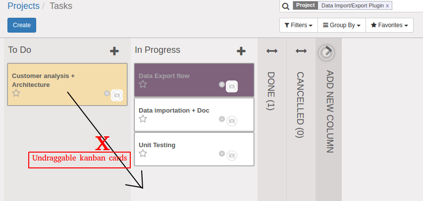

<section class="oe_container">
    <div class="oe_row oe_spaced">
        <h2 class="oe_slogan">Undraggable Kanban</h2>
        <h3 class="oe_slogan">Make your kanban card to be undraggable.</h3>
        <div class="oe_span6">
            <div class="oe_demo oe_picture oe_screenshot">
                    
            </div>
        </div>
        <div class="oe_span6">
            <p class='oe_mt32'>
Make your kanban cards won't be dragged accross stages. It will apply to your all kanban views with stages.
            </p>
        </div>
    </div>
</section>
